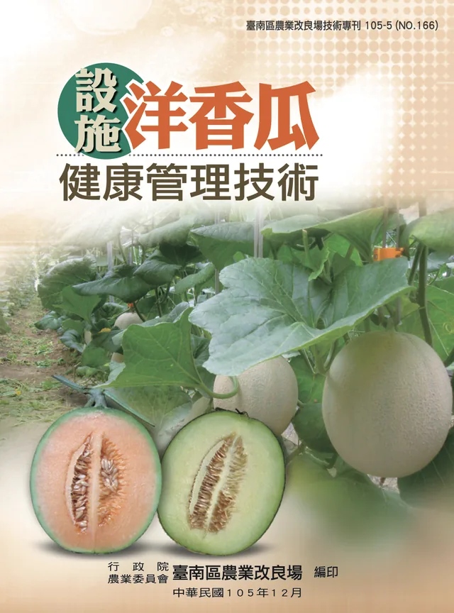
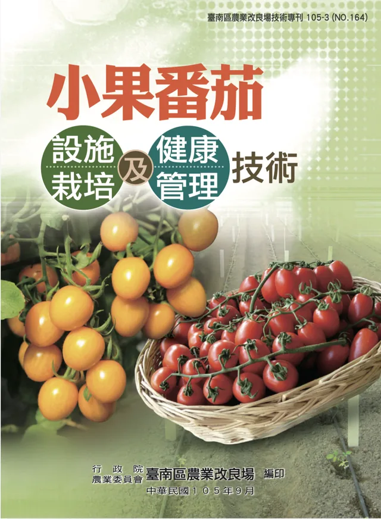

05 / KNOWLEDGE BASE手冊如何變成
手冊如何變成
可檢索的知識
RAG 的品質先取決於資料。團隊以農業機關公開手冊為主，保留文件與頁碼，讓檢索結果可以回到原始內容。


圖示為知識庫採用資料中的兩份中文手冊。
277個手冊段落
段落數用來描述目前索引規模，並非測試題數，也不是回答正確率。
來源篩選
確認文件、作物與資料可信度，排除來源不明內容。
清理切塊
把長篇手冊整理為適合語意檢索的段落。
向量化
以 Gemini embedding 建立每個段落的向量。
附加欄位
保留作物、原始文件和頁碼，支援後續引用。